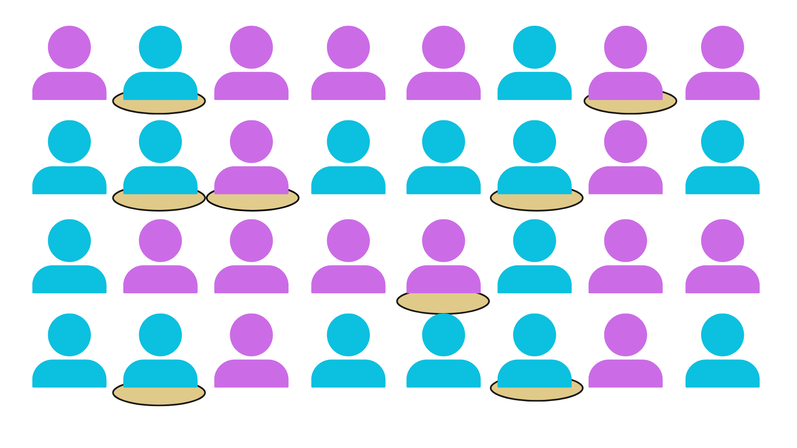
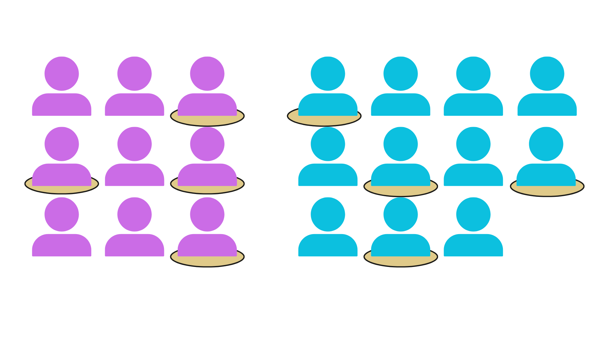
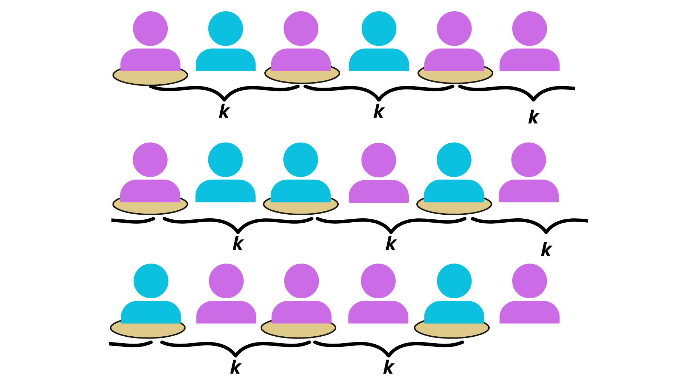
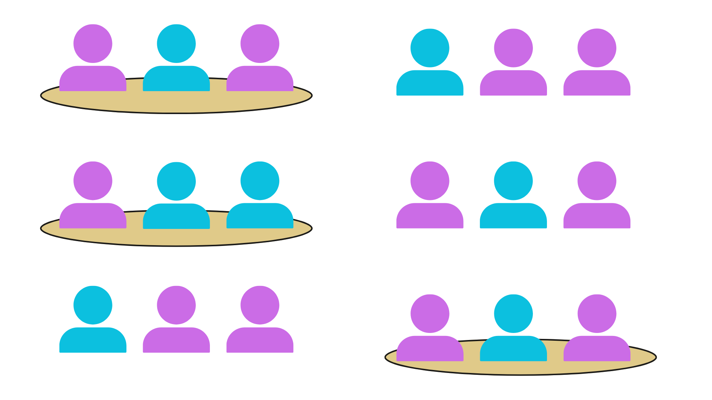

1 Fundamentos de la Estadística
La estadística tiene una presencia constante en nuestra vida, aunque rara vez le prestemos atención. Está en las decisiones que tomamos, en las recomendaciones que recibimos y en cómo entendemos el mundo que nos rodea.
Hoy existimos inmersos en datos: cada visita al médico, cada interacción en línea o compra registrada por un dispositivo móvil produce información que alimenta sistemas sobre quiénes somos y qué deseamos. Este flujo constante de datos ha hecho que la estadística sea una herramienta poderosa en varios campos de nuestra sociedad. En salud, por ejemplo, se utilizan estadísticas para medir riesgos, evaluar el efecto de tratamientos y diseñar estrategias para prevenir enfermedades. El análisis estadístico sustenta los ensayos clínicos que prueban nuevos medicamentos, con el objetivo de confirmar su seguridad y eficacia. En deportes, se aplica para estudiar la efectividad de jugadores y equipos, lo que puede optimizar estrategias que son el factor decisivo entre perder o ganar un partido. En educación, las estadísticas son críticas en la evaluación del rendimiento académico, identificando áreas que necesitan un atención y adaptando métodos de enseñanza a las necesidades de los estudiantes.
Incluso en nuestras vidas digitales, las estadísticas son la base de los algoritmos que personalizan lo que vemos en las redes sociales, sugieren qué película ver o qué ruta tomar para evitar un atasco de tráfico. Realizamos, incluso en situaciones cotidianas y sin ser plenamente conscientes de ello, pequeños análisis estadísticos: comparando precios mientras compramos, calculando promedios en nuestros gastos mensuales o verificando si debemos abrigarnos, según el pronóstico del tiempo del tiempo.
Y es que la base de la estadística es la capacidad de recolectar, organizar, analizar, interpretar y presentar datos. Sin embargo, en este libro nos enfocaremos en explorar la Ciencia Estadística en su sentido más riguroso y estructurado. La Ciencia Estadística es un conjunto metódico de herramientas y técnicas que nos permite no solo recolectar datos, sino también analizarlos con profundidad e inferir conclusiones significativas (Agresti, Franklin, y Klingenberg 2023). Desde el diseño de experimentos hasta la interpretación de resultados, esta disciplina busca comprender la incertidumbre inherente a la realidad para tomar decisiones informadas en diversos campos como la economía, la medicina, la ingeniería y, en particular, las ciencias sociales, que serán nuestro enfoque principal.
1.1 La estadística y las ciencias sociales
Como investigador social, te enfrentas al desafío de comprender la realidad social, un reto que involucra la interacción de las personas, las instituciones y los sistemas que las estructuran. Nuestro objeto de estudio no son solo los números, sino las experiencias humanas, los comportamientos y las estructuras que dan forma a nuestras sociedades.
En este proceso, la estadística nos permite organizar y describir los datos de manera clara y estructurada, así como poder aplicar las herramientas necesarias para inferir conclusiones válidas a partir de la información disponible. A través de métodos estadísticos, podemos identificar tendencias, asociaciones y relaciones entre variables que puede que no estén a simple vista o deseemos poder tener un una forma objetiva de probarlo. La estadística intenta ser un puente entre la complejidad de los fenómenos sociales y la capacidad de generar conocimiento preciso y fundamentado. Nos ayuda a transformar datos dispersos en información útil y a construir modelos que nos permitan hacer predicciones y recomendaciones basadas en nuestros datos.
Para hacer el viaje más ameno, en los primeros capítulos nos aventuraremos junto a Flor, una joven investigadora social que, como tú, está comenzando. Flor será nuestra compañera, mostrando, a través de sus propias experiencias y aprendizajes, los desafíos, dudas y obstáculos que surgen al aplicar la estadística en la investigación social.

La ciencia estadística brinda un conjunto de herramientas para comprender una realidad caracterizada por la incertidumbre. Pero, ¿a qué herramientas nos referimos? Agresti (2018) divide los métodos en tres categorías: diseño, descripción e inferencia.
El diseño es generalmente el primer paso en la investigación. Se refiere a planificar un estudio para recopilar y analizar pruebas empíricas de manera que el investigador pueda responder a las preguntas planteadas (Ragin 2007). Por ejemplo, en una encuesta, el diseño determina cómo seleccionar a las personas que se entrevistarán y cómo elaborar el cuestionario que se administrará.
La descripción implica resumir los datos para facilitar su comprensión y permitir extraer información útil. Los datos en bruto, como una lista completa de observaciones persona por persona, son difíciles de interpretar. Por ello, usamos herramientas como gráficos, tablas o medidas resumen (como promedios y porcentajes) para condensar la información.
Por ejemplo, si realizamos una encuesta sobre la opinión pública respecto a una política gubernamental, en lugar de listar cada respuesta individual, podríamos presentar los resultados mediante un gráfico de barras que muestre el porcentaje de personas a favor, en contra o neutrales. Estos resúmenes visuales y numéricos se denominan estadísticas descriptivas. Utilizamos las estadísticas descriptivas para simplificar los datos a una forma más manejable y comprensible para describir el comportamiento de nuestros datos y explorar posibles asociaciones importantes.
La inferencia es el proceso de usar datos para sacar conclusiones sobre algo más amplio. Nos ayuda a entender y generalizar sobre aquello que está sucediendo en el presente y también nos permite predecir cómo podrían comportarse los datos en el futuro o bajo diferentes condiciones. Este enfoque es especialmente útil cuando no podemos observar todas los casos posibles, pero contamos con una muestra representativa.
Por ejemplo, si realizamos una encuesta a un grupo representativo de personas y descubrimos que el 60% de los participantes apoyan una política, podemos usar esta información para estimar que algo similar podría ocurrir en toda la población. Además, la inferencia puede ayudarnos a predecir cómo cambiarán las ventas de un producto el próximo mes o a entender cómo una nueva medicina podría afectar a los pacientes en un ensayo clínico. Hablaremos más sobre la representatividad en el apartado del muestreo (4.4)
1.2 Datos
En la investigación social y científica, los datos son nuestra principal fuente de información. Son mediciones, observaciones o registros recopilados para analizar y comprender fenómenos específicos. Por ejemplo, el número de personas en Perú, los departamentos donde nacieron, el nivel de educación en una población, o la relación entre la tasa de empleo y la educación, son todos ejemplos de datos.
Sin datos, nuestra capacidad para explorar, describir e interpretar la realidad sería limitada. Estos son la clave para transformar preguntas en respuestas y evidencia en conocimiento.
Los datos se generan a partir de mediciones realizadas sobre individuos, grupos, o eventos. Estos pueden recopilarse mediante encuestas, censos, observaciones directas, registros administrativos o experimentos.
Para poder sistematizar la información debemos tener claro la diferencia entre unidad de observación, observación y variable:
- Unidad de observación: Es la entidad sobre la que se recopilan los datos, como una persona, un hogar, una empresa, o una región.
- Ejemplo: Cada votante en una elección sería una unidad de observación.
- Observación: Es un conjunto específico de valores medidos o registrados para una unidad de observación. Generalmente, cada observación corresponde a una fila en un conjunto de datos tabular.
- Ejemplo: La información de un votante, incluyendo su edad, género y su preferencia electoral, sería una observación.
- Variable: Es una característica o atributo medido sobre las unidades de datos. Cada columna en un conjunto de datos representa una variable.
- Ejemplo: “Edad”, “Nivel educativo” y “Preferencia electoral” son variables.
Un conjunto de datos es una colección organizada de todas las observaciones recolectadas. Por lo general, se presenta en formato tabular, donde las filas representan las observaciones y las columnas representan las variables.

1.3 Variables y variabilidad
Las variables representan las características o propiedades de los elementos que se están estudiando. Por ejemplo, en un estudio sobre el comportamiento electoral, variables como la edad, el nivel educativo, el ingreso y las preferencias políticas son fundamentales para entender posibles patrones de comportamiento. Cada observación (persona, región, etc.) es única, por lo que la información que se recolecta sobre sus características varía de una observación a otra. Se les denomina “variables” precisamente porque su valor no es fijo, sino que puede cambiar (variar) entre diferentes observaciones o a lo largo del tiempo. Este cambio o variación es precisamente lo que nos interesa, ya que permite entender hasta qué punto esta variación es producto de la aleatoriedad natural que existe al no ser todos iguales, o si podemos identificar factores determinantes que influyen en las características observadas.
1.3.1 Tipos de variables
Es importante también tener en cuenta que no todas las características son medidas de la misma forma. Los datos recolectados pueden ser de diferentes tipos, lo cual influye en cómo se analizan e interpretan. Los dos tipos principales de datos son numéricos y categóricos.
Variables Numéricas
Los datos numéricos se refieren a cualquier tipo de información que puede ser medida y expresada en números. Estos datos pueden ser manipulados matemáticamente y se dividen en dos subcategorías:
Varibles Continuas: Pueden tomar cualquier valor dentro de un rango continuo. Estos datos no están restringidos a valores enteros y pueden incluir fracciones y decimales. Por ejemplo:
Ingreso mensual de un hogar: El ingreso puede variar desde cero hasta cualquier cantidad máxima, sin limitaciones específicas. Puede ser 2000.50, 3000.75, etc.
Tiempo dedicado a ver televisión por semana: Este tiempo puede ser fraccionado en minutos y segundos, variando de forma continua. Por ejemplo, 5.5 horas, 10.25 horas, etc.
Varibles Discretas: Toman valores específicos y separados. Estos datos son contables y no pueden ser fraccionados. Por ejemplo:
Número de votantes en una elección: Se cuenta en números enteros (1000, 2000, etc.).
Conteo de delitos en una ciudad: El número de incidentes reportados se registra en valores enteros como 150, 300, etc.
- Varibles Categóricas
Los datos categóricos se refieren a información que puede ser dividida en grupos distintos, cada uno de los cuales representa una categoría o una cualidad diferente. Estos datos no tienen un valor numérico intrínseco y se dividen en tres subcategorías:
Varibles Nominales: No tienen un orden intrínseco. Estos datos representan categorías sin un orden específico. Por ejemplo:
Nacionalidad: Perú, Colombia, Venezuela.
Preferencias políticas: Liberal, conservador, independiente.
Varibles Binaria: Estos datos pueden ser tratados como casos especiales de las variables nominales. Solo pueden tomar uno de dos valores posibles. También llamados variables dicotómicas, representando una de dos categorías opuestas. Por ejemplo:
0/1: Presencia o ausencia de una característica.
Sí/No: Respuesta a una pregunta específica.
Verdadero/Falso: Estado de una condición.
Varibles Ordinales: Tienen un orden o jerarquía implícita. Aunque las categorías son ordenadas, la diferencia entre ellas no necesariamente es igual. Por ejemplo:
Escala de satisfacción con el gobierno: Muy insatisfecho, insatisfecho, neutral, satisfecho, muy satisfecho.
Nivel de educación: Primaria, secundaria, universidad, posgrado.
Es muy importante tener un conocimiento claro de las variables presentes en el estudio y su forma de medición. Finalmente, son el tipo de variables las que determinarán el tipo de análisis que se va a realizar y la herramienta estadística adecuada.
1.4 Muestreo
Cuando investigamos fenómenos sociales, una de las primeras preguntas que surge es cómo recolectar datos de una población amplia sin la necesidad de entrevistar a cada uno de sus miembros. Esta tarea puede ser especialmente compleja en ciudades grandes o regiones extensas, donde abarcar a toda la población es prácticamente imposible debido a las limitaciones de tiempo, recursos y logística. Por ello, el muestreo es una herramienta indispensable.
El muestreo permite estudiar a una parte de la población en lugar de examinarla por completo, logrando así simplificar el proceso de recolección de datos. La idea principal es seleccionar un grupo más pequeño, llamado muestra, que refleje las características de la población total. Y, aunque el muestreo tengas ciertas limitaciones que aclararemos en los próximos capítulos, nos ayuda a responder nuestras preguntas sobre la sociedad de manera más rápida, económica y eficiente.
Al hablar de muestreo, es inevitable considerar la representatividad. La representatividad asegura que la muestra refleje las características clave de la población total, como edad, género, nivel socioeconómico y región geográfica. Sin representatividad, las conclusiones obtenidas pueden estar sesgadas y no ser aplicables a toda la población. Si no logramos que la muestra sea representativa, es probable que nuestras conclusiones estén sesgadas. Por ejemplo, si en una encuesta sobre transporte público solo incluimos a personas que viven cerca de estaciones principales, no podremos entender las dificultades que enfrentan quienes viven fuera de la periferia. En este caso, los resultados obtenidos no reflejarían la realidad del sistema de transporte para toda la población.
Para asegurar la representatividad, nuestra selección para la muestra debe ser lo más imparcial posible, y aquí es donde la aleatoriedad juega un papel crucial. Al seleccionar individuos al azar, se minimiza el sesgo. La aleatoriedad ayuda a que cada individuo tenga la misma oportunidad de ser seleccionado, aumentando la probabilidad de que la muestra refleje las características de toda la población. Por ejemplo, si la población tiene un 60% de adultos jóvenes y un 40% de adultos mayores, la aleatoriedad tiende a garantizar que la muestra tenga una proporción similar de ambos grupos. De esta manera, logramos que la muestra sea representativa y que las conclusiones obtenidas puedan ser aplicadas al resto de la población con mayor confianza.
1.4.1 Tipos de muestreo
Como ya vimos, la representatividad de una muestra es crucial para extrapolar los resultados obtenidos en esta a una población más amplia. Una muestra representativa permite que los resultados sean generalizables a la población accesible y, a partir de esta, a la población objetivo. Una muestra será representativa si todos los sujetos de la población tienen la misma posibilidad de ser seleccionados y si el tamaño de la muestra refleja adecuadamente las características de la población en términos de la distribución de las variables estudiadas. Otzen y Manterola (2017) establecen una clara disntinción:
Técnicas de muestreo probabilístico
En el muestreo probabilístico, cada individuo de la población tiene una probabilidad conocida y no nula de ser seleccionado. Esto garantiza que la muestra sea representativa y que las conclusiones puedan generalizarse a la población total.
Aleatorio simple: Cada miembro de la población tiene la misma probabilidad de ser seleccionado. Por ejemplo, en un estudio sobre la percepción de los servicios municipales en una ciudad, se obtiene una lista de los residentes inscritos en el padrón electoral. Luego, asigna un número a cada residente y selecciona al azar a 300 personas. Este enfoque asegura que cada persona de la ciudad tenga la misma probabilidad de ser seleccionada.

Elaboración propia Estratificado: Se divide la población en subgrupos homogéneos o estratos (como género, edad o nivel educativo) y se selecciona una muestra aleatoria dentro de cada uno. Esto asegura que todos los estratos estén representados. Por ejemplo, para estudiar la participación laboral en un país, se divide la población en estratos basados en niveles educativos: primaria, secundaria, técnica y universitaria. Luego selecciona proporcionalmente a los participantes de cada grupo. Por ejemplo, si el 40% de la población tiene nivel secundario, el 40% de los encuestados se selecciona de este estrato, garantizando que todos los niveles educativos estén representados en los resultados.

Elaboración propia Sistemático: Se selecciona cada “k-ésimo” individuo de una lista organizada. Por ejemplo, en una encuesta sobre hábitos de consumo en mercados locales, se obtiene una lista de 1,000 comerciantes registrados. Se decide seleccionar a cada décimo comerciante de la lista (k=10), comenzando por un número inicial que se elige al azar. Este método es práctico, especialmente cuando se trabaja con grandes poblaciones.

Elaboración propia Por conglomerados: Se divide la población en grupos naturales, como barrios o comunidades, y se seleccionan algunos de estos conglomerados para estudiar a todos sus miembros. Por ejemplo, en un estudio sobre acceso a educación en comunidades rurales, se seleccionan tres provincias al azar dentro de una región. Luego, en cada provincia, se eligen dos distritos y se encuestan a todas las familias de estos distritos. Este método reduce los costos y el tiempo necesario para cubrir grandes áreas geográficas.

Elaboración propia
Técnicas de muestreo no probabilístico
En el muestreo no probabilístico, la selección de participantes no sigue un principio de aleatoriedad, lo que limita su representatividad. Sin embargo, estas técnicas son útiles en estudios exploratorios o cualitativos.
Por conveniencia: Se seleccionan participantes accesibles y disponibles. Por ejemplo, se realiza un estudio sobre los efectos del alza de precios de los alimentos se realiza entrevistando a las personas que asisten a un mercado local durante un fin de semana. Los participantes son seleccionados por su proximidad al encuestador, lo que permite recolectar datos rápidamente, aunque con un sesgo hacia personas que frecuentan ese mercado en particular o a esa hora en específico.
Intencional o de juicio: Los investigadores seleccionan a participantes que consideran relevantes para el estudio. Por ejemplo, en un estudio sobre líderes comunitarios, se entrevistaría solo a líderes reconocidos en la comunidad.
1.4.2 Comparación de métodos de muestreo
| Método | Probabilístico | Ventajas | Limitaciones |
|---|---|---|---|
| Aleatorio simple | Probabilístico | Igualdad en la probabilidad de inclusión, sencillo. | Puede no representar subgrupos pequeños o diversos. |
| Estratificado | Probabilístico | Representación garantizada de subgrupos importantes. | Requiere información previa sobre los estratos. |
| Sistemático | Probabilístico | Eficiente y fácil de aplicar. | Introduce sesgo si hay patrones en la lista. |
| Por conglomerados | Probabilístico | Práctico y económico para poblaciones grandes y dispersas. | Menor precisión si los conglomerados no son representativos. |
| Por conveniencia | No probabilístico | Rápido y económico. | Alta probabilidad de sesgo y falta de representatividad. |
| Intencional | No probabilístico | Útil para temas específicos o grupos únicos. | Depende del criterio del investigador, no es generalizable. |
Elegir el método de muestreo adecuado depende de los objetivos del estudio, las características de la población y los recursos disponibles.
1.5 Estadística descriptiva e inferencial
Perfecto, ya hemos definido qué son los datos, las variables y el muestreo. Hemos seleccionado nuestra muestra y recopilado la información necesaria, y ahora contamos con una base de datos lista para analizar. Pero, ¿por dónde empezamos? El siguiente paso es explorar las dos grandes ramas de la estadística: la estadística descriptiva y la estadística inferencial.
A lo largo de los próximos capítulos, este libro se centrará en explicar y aplicar estas herramientas en investigaciones sociales. La estadística descriptiva y la inferencial son los pilares que sostendrán gran parte del análisis que realizaremos. Mientras que la descriptiva nos ayudará a organizar y entender los datos que recolectamos, la inferencial nos permitirá extraer conclusiones significativas que trasciendan nuestra muestra.
Estadística descriptiva
La estadística descriptiva se encarga de resumir y describir las características principales de un conjunto de datos. Al trabajar con bases de datos, estas pueden contener cientos o incluso miles de observaciones, lo que puede resultar abrumador. La función de la estadística descriptiva es condensar esta información en un formato más comprensible y manejable, utilizando herramientas como tablas, gráficos y medidas resumen.
Tablas y gráficos: Una manera visual de entender la información. Por ejemplo, en un estudio sobre el impacto de una política educativa, podríamos usar gráficos de barras para mostrar el porcentaje de personas que apoyan o rechazan la política, o tablas para presentar la distribución de los encuestados por nivel educativo.
Medidas de tendencia central: Ayudan a identificar valores representativos dentro de los datos, como la media (promedio), la mediana (valor central) y la moda (valor más frecuente). Por ejemplo, en un estudio sobre ingresos familiares, la media puede indicarnos el ingreso promedio, mientras que la mediana puede ser más representativa si hay grandes diferencias entre los ingresos más bajos y los más altos.
Medidas de dispersión: Complementan el análisis descriptivo al mostrar la variabilidad de los datos, como el rango, la varianza o la desviación estándar. Por ejemplo, si analizamos el tiempo que las personas dedican al transporte público en diferentes distritos, la desviación estándar nos indica si la experiencia es similar para todos o varía significativamente.
Estadística inferencial
Mientras que la estadística descriptiva se centra en los datos que tenemos, la estadística inferencial da un paso más allá al usar estos datos para hacer generalizaciones sobre una población más amplia. Dado que generalmente trabajamos con muestras y no con toda la población, necesitamos herramientas que nos permitan estimar qué tan representativos son nuestros resultados y qué tan confiables pueden ser las conclusiones que saquemos.
Pruebas de hipótesis: Nos ayudan a responder preguntas específicas basadas en los datos. Por ejemplo, en un estudio sobre el impacto del nivel educativo en el apoyo a una política ambiental, podríamos plantear la hipótesis de que “las personas con educación universitaria apoyan más esta política que quienes tienen solo educación básica”. Una prueba de hipótesis evaluaría si los datos respaldan esta afirmación.
Intervalos de confianza: Indican el rango dentro del cual es probable que se encuentre el valor real de la población. Por ejemplo, si calculamos que el 60% de nuestra muestra apoya una determinada política, un intervalo de confianza nos muestra, con cierto grado de seguridad, un rango donde este porcentaje podría estar en la población general, como entre el 57% y el 63%.
Modelos de regresión: Permiten analizar relaciones entre variables. Por ejemplo, podríamos investigar si existe una relación significativa entre el ingreso familiar y el uso de transporte público subsidiado, controlando otras variables como la distancia al trabajo o el género.
Hay que entender que la estadística descriptiva e inferencial son herramientas complementarias. La descriptiva se encarga de organizar y resumir los datos para hacerlos comprensibles, destacando patrones, tendencias y características principales de un conjunto de datos. La estadística inferencial utiliza esos resúmenes para hacer generalizaciones y responder preguntas sobre una población más amplia. A través de la inferencia, podemos ir más allá de los datos observados para hacer estimaciones, probar hipótesis y explorar relaciones entre variables.
1.6 Flor y el transporte público en Lima Metropolitana
Flor se dispuso a comprender cómo perciben los limeños el transporte público. Para ello, comenzó por planificar cuidadosamente el DISEÑO de su investigación, definiendo los elementos esenciales que estructurarían su estudio.
Consciente de que entrevistar a toda la población de Lima Metropolitana sería inviable, Flor decidió trabajar con una MUESTRA representativa. Para ello, tomó en cuenta todos los distritos de la ciudad, tratándolos como grupos independientes para asegurar una buena cobertura territorial. Luego, dentro de cada distrito, seleccionó al azar algunas calles donde realizaría las entrevistas a sus domicilios. Este método, que combina un muestreo estratificado con un muestreo por conglomerados, lo que permitió incluir tanto zonas céntricas como periféricas, mientras que mantiene el carácter probabilístico.
En el diseño, definió su UNIDAD DE OBSERVACIÓN, es decir, las personas usuarias del transporte público en Lima. Estas serían quienes proporcionarían las respuestas a su cuestionario. Para cada una, estableció las VARIABLES que mediría:
Variables continuas, como el tiempo diario dedicado al transporte (en horas).
Variables categóricas, como el medio principal de transporte utilizado (bus, taxi colectivo, mototaxi).
Variables ordinales, como el nivel de satisfacción con el servicio, categorizado en Muy insatisfecho, Insatisfecho, Neutral, Satisfecho y Muy satisfecho.
Cada conjunto de respuestas proporcionadas por una UNIDAD DE OBSERVACIÓN se convirtió en una OBSERVACIÓN, y todas estas observaciones conformaron la base de datos que Flor construiría para su análisis.
Con los datos recolectados, organiza su base en una tabla, donde cada fila representa una unidad de observación y cada columna corresponde a una variable medida. Para analizar esta información, utiliza la ESTADÍSTICA DESCRIPTIVA, que le permite resumir y organizar los datos para facilitar su comprensión.
Primero, recurre a tablas y gráficos para presentar visualmente la información y observar tendencias generales. Estas herramientas le ayudan a identificar cómo se distribuyen las variables medidas y a detectar patrones iniciales en los datos. La visualización también le permite comparar diferentes categorías y grupos de manera clara.
Luego, utiliza medidas de resumen para condensar la información. Estas medidas le permiten determinar valores representativos que describen las características generales de las variables. Esto le permite evaluar si ciertas características cambian de manera consistente o si existen variaciones importantes que podrían ser relevantes.
Flor no solo busca resumir los datos, también quiere entender cómo las variables que ha recopilado interactúan entre sí. Comienza a analizar posibles conexiones entre ellas, lo que le permite identificar patrones que podrían explicar las experiencias de los usuarios del transporte público. Por ejemplo, examina cómo el tiempo de viaje diario (variable continua) podría relacionarse con el nivel de satisfacción (variable ordinal) o cómo el medio de transporte utilizado (variable categórica) podría influir en la percepción de seguridad (variable ordinal).
Con estas observaciones iniciales, Flor recurre a herramientas de ESTADÍSTICA INFERENCIAL para generalizar los hallazgos obtenidos de su muestra a toda la población de usuarios del transporte público en Lima. Su objetivo es utilizar estas herramientas para convertir las tendencias observadas en su muestra en conclusiones más amplias y fundamentadas.
Intervalos de confianza: Flor estima rangos dentro de los cuales es probable que se encuentren los valores reales de la población. Por ejemplo, analiza qué proporción de usuarios en la población general está insatisfecha con el servicio, basándose en los datos de su muestra y aplicando un intervalo de confianza para definir este rango con un nivel de certeza.
Pruebas de hipótesis: Flor evalúa si las diferencias observadas en el nivel de satisfacción entre los usuarios de diferentes medios de transporte (como buses y taxis colectivos) son significativas. Esto le permite confirmar si las diferencias son reales o si podrían deberse al azar.
Relaciones entre variables: Explora la relación entre el nivel de ingresos (variable categórica) y el tiempo de viaje diario (variable continua), identificando patrones que podrían reflejar desigualdades estructurales.
1.7 Resumen del capítulo
La estadística es una herramienta fundamental para la recopilación, organización y análisis de datos en una amplia gama de campos, y en nuestro caso, en las ciencias sociales. Permite la conversión de información dispersa en conocimiento para comprender fenómenos sociales y tomar decisiones fundamentadas.
El diseño de la investigación es la etapa donde el investigador debe decidir cómo recolectar datos eligiendo una muestra representativa de la cual los resultados puedan ser replicados a una población más amplia. Dependiendo de los objetivos del estudio, se utilizan métodos de muestreo probabilísticos (por ejemplo, muestreo aleatorio simple, estratificado, sistemático y por conglomerados) o métodos no probabilísticos (por ejemplo, muestreo por conveniencia y por juicio).
Luego tenemos datos y variables. Los datos se agrupan en unidades de observación y cada registro de observación tiene valores de variables. Estas variables pueden ser numéricas o categóricas, y su clasificación afecta la manera en que se analizan.
La Estadística Descriptiva ayuda a describir las características básicas de los datos, resaltando el patrón y las tendencias en los datos mediante las tablas, gráficos y medidas que resumen los datos.
La Estadística Inferencial generaliza los hallazgos de la muestra a la población utilizando principios de probabilidad y haciendo uso de intervalos de confianza, pruebas de hipótesis y modelos de relación entre las variables.
1.8 Ejercicios
1.En un estudio sobre hábitos de transporte, los investigadores registran:
Tipo de transporte utilizado (bus, taxi, bicicleta),
Tiempo de viaje diario (en minutos),
Nivel de satisfacción (Muy satisfecho, Satisfecho, Neutral, Insatisfecho, Muy insatisfecho).
¿Cuál de las siguientes clasificaciones de variables es correcta?
a) Tiempo de viaje: Continua; Tipo de transporte: Nominal; Nivel de satisfacción: Ordinal
b) Tiempo de viaje: Discreta; Tipo de transporte: Ordinal; Nivel de satisfacción: Nominal
c) Tiempo de viaje: Continua; Tipo de transporte: Ordinal; Nivel de satisfacción: Nominal
d) Tiempo de viaje: Discreta; Tipo de transporte: Nominal; Nivel de satisfacción: Ordinal
2.Un investigador desea estudiar la percepción de seguridad en parques de una ciudad. Para ello, utiliza un listado de todos los visitantes registrados y selecciona al azar 200 personas. ¿Qué método de muestreo está utilizando?
a) Muestreo por conglomerados
b) Muestreo aleatorio simple
c) Muestreo estratificado
d) Muestreo por conveniencia
3.En un censo escolar, se registran datos como “Edad”, “Grado cursado” y “Preferencia por asignaturas”. ¿Cuál es la unidad de observación?
a) La escuela
b) El grado escolar
c) Las asignaturas
d) El estudiante
4.Para un estudio sobre el uso de transporte público, se divide a la población en grupos según su nivel socioeconómico (alto, medio, bajo) y se selecciona aleatoriamente una muestra proporcional de cada grupo. ¿Qué tipo de muestreo se está aplicando?
a) Muestreo aleatorio simple
b) Muestreo estratificado
c) Muestreo sistemático
d) Muestreo por conglomerados
5.Un investigador organiza una tabla para mostrar el tiempo promedio de espera en paradas de buses según diferentes distritos. ¿Qué tipo de análisis está realizando?
a) Estadística descriptiva
b) Estadística inferencial
c) Pruebas de hipótesis
d) Modelos de regresión
6.Un estudio encuentra que los tiempos de viaje (en horas) más largos se observan en usuarios de transporte público de distritos periféricos. ¿Qué tipos de variables se está utilizando para esta asociación? (2 respuestas)
a) Variable continua
b) Variable categórica nominal
c) Variable ordinal
d) Variable binaria
7.Un investigador selecciona una muestra de cada décima persona en una lista de usuarios de transporte público. ¿Qué tipo de muestreo está utilizando?
a) Muestreo aleatorio simple
b) Muestreo sistemático
c) Muestreo estratificado
d) Muestreo por conveniencia
8.Un estudio clasifica a los usuarios según su nivel de satisfacción con el transporte (Muy satisfecho, Satisfecho, Neutral, Insatisfecho, Muy insatisfecho). ¿Qué tipo de variable es el nivel de satisfacción?
a) Continua
b) Discreta
c) Ordinal
d) Nominal